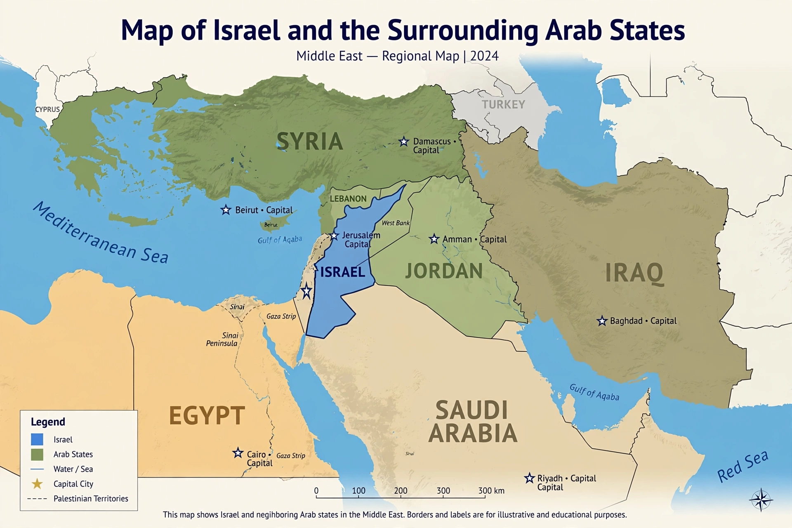

Arab–Israeli conflict

The Arab–Israeli conflict is a long-running series of wars, disputes and periods of tension between Israel and various Arab states and organisations, rooted in competing national movements — Zionism and Arab nationalism — that claimed the same territory in the southern Levant. It is commonly dated from the late 19th and early 20th centuries, intensifying during the British Mandate for Palestine and erupting into open war with the establishment of the State of Israel in 1948.
Background
Under Ottoman rule, Palestine was predominantly Arab in population, though a Jewish community had maintained a continuous presence for centuries. The Zionist movement, formalised at the First Zionist Congress in Basel in 1897, sought a Jewish national home in the region. During the First World War, Britain issued the Balfour Declaration (1917), favouring the establishment of a national home for the Jewish people in Palestine, while also making wartime commitments to Arab leaders. Britain administered the territory under a League of Nations mandate from 1920.
Jewish immigration, accelerating in the 1930s as Jews fled persecution in Europe, heightened Arab opposition and led to revolts, most notably the Arab revolt of 1936–1939. After the Second World War and the Holocaust, the United Nations proposed partitioning Palestine into Jewish and Arab states (Resolution 181, 1947). Jewish leaders accepted the plan; Arab leaders rejected it.
Major wars
1948 Arab–Israeli War. Following Israel's declaration of independence on 14 May 1948, neighbouring Arab states invaded. Israel prevailed and expanded beyond the partition lines; Jordan held the West Bank and East Jerusalem, and Egypt held Gaza. Hundreds of thousands of Palestinian Arabs fled or were expelled from their homes — an event Palestinians call the Nakba ("catastrophe") — and a large refugee population resulted. Israel refers to the conflict as its War of Independence.
Suez Crisis (1956). Israel, Britain and France attacked Egypt after the nationalisation of the Suez Canal; the operation was halted under international pressure.
Six-Day War (1967). Israel launched a pre-emptive strike amid escalating tensions and captured the West Bank, East Jerusalem, Gaza Strip, Sinai Peninsula and Golan Heights. The occupation of these territories became a central issue of the conflict. UN Security Council Resolution 242 called for Israeli withdrawal from territories occupied in the conflict in exchange for peace.
Yom Kippur War (1973). Egypt and Syria attacked Israel on Yom Kippur; after initial Arab gains, Israel recovered the lost ground. The war led to the 1978 Camp David Accords and the 1979 Egypt–Israel peace treaty, the first between Israel and an Arab state; Israel returned the Sinai.
Later developments
The conflict increasingly centred on the Israeli–Palestinian dimension: the First Intifada (1987–1993), the Oslo Accords (1993–1995) creating the Palestinian Authority, the Second Intifada (2000–2005), Israel's withdrawal from Gaza in 2005, and repeated Gaza wars after Hamas took control of the territory in 2007. Jordan signed a peace treaty with Israel in 1994. In 2020, the Abraham Accords normalised Israel's relations with the United Arab Emirates, Bahrain, Morocco and Sudan.
A large-scale Hamas attack on Israel in October 2023 triggered a major war in Gaza, drawing in regional actors including Hezbollah in Lebanon and the Houthis in Yemen, and sharply escalating regional tensions. Casualty figures and responsibility for specific events in this war remain contested by the parties.
Core issues
Enduring points of dispute include the borders of a future Palestinian state, the status of Jerusalem, Israeli settlements in the occupied territories, security arrangements, and the Palestinian right of return and status of refugees. The "two-state solution" — an independent Palestine alongside Israel — has long been the framework endorsed by much of the international community, though its prospects are widely debated.
See also: Israeli–Palestinian conflict, Negotiation, Conflict resolution.